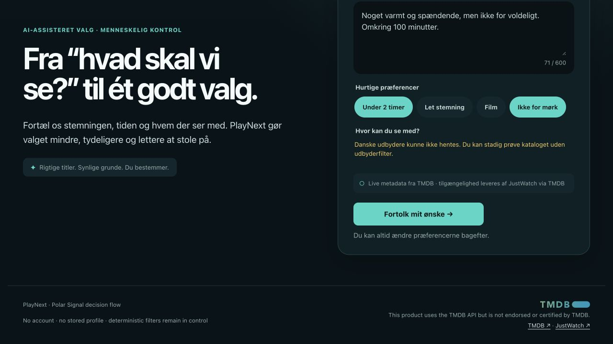
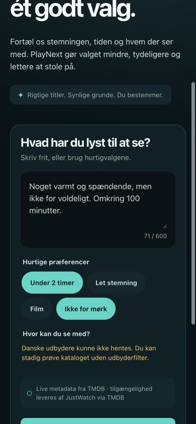

Problem
Finding more titles is easy; choosing one that fits the moment, time and available services is harder.
Bilingual AI decision product · Functional local prototype
A movie and series decision assistant that turns mood, time and streaming constraints into a small, explainable shortlist grounded in real catalogue data.
Local prototype · Production deployment is not published yet

Finding more titles is easy; choosing one that fits the moment, time and available services is harder.
Viewers who want a small, trustworthy shortlist instead of another endless catalogue.
Product strategy, UX, React frontend, API architecture, recommendation logic, AI boundaries and testing.
React, TypeScript, Fastify, Zod, TMDB, OpenAI API, Vitest
01
The product narrows a high-choice catalogue using mood, runtime, content type, exclusions and Danish provider availability. The goal is a confident decision, not a longer recommendation feed.
Users can inspect and correct interpreted preferences before recommendations run.
TMDB metadata and provider availability remain the source of truth for every candidate.
02
Free text becomes an editable preference summary. Deterministic filters create a valid shortlist, and users can reject, replace, request similar titles, edit preferences or restart.

03
The React client, Fastify API and shared Zod schemas keep interface state, server secrets and validation separate. AI extracts preferences and may rerank only an allowlisted shortlist; it cannot invent titles or metadata.
Bounded text and explicit controls describe the current need.
Structured AI output is validated and remains editable.
TMDB data passes hard filters and inspectable scoring.
AI can reorder only validated candidate IDs with grounded evidence.
The interface shows match reasons, compromises and provenance.
Recommendations still work honestly when AI is unavailable.
04
The local project includes schema, API and React tests plus browser QA from 360 to 1440 pixels. Production deployment and external usability testing have not yet been completed.
Status: Automated and responsive QA completed · External usability testing is planned.
Test with 3–5 streaming viewers whether the request, preference correction and recommendation refinement flow remains understandable.
Record completion, critical errors, assistance, hesitation, wrong turns and confidence in the explanations.
Usability findings and resulting product changes remain pending until external sessions are completed.
Deterministic validation keeps the product useful and explainable even when AI is unavailable.
Balancing a simple decision flow with provider, runtime, genre and AI failure states.
Deploy the edge architecture, add observability and test the complete flow with real viewers.
AI study prototype · Product and technical UX